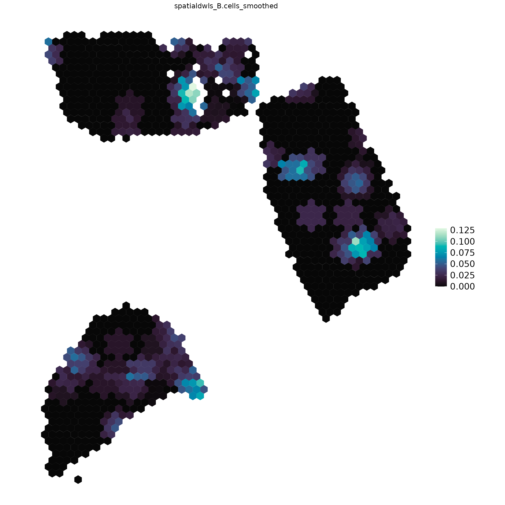

Example
spacedeconv_example.Rmdspacedeconv is a unified interface for the deconvolution of spatial transcriptomics data. In total spacedeconv gives access to 20 deconvolution methods:
#> Loading required package: SingleCellExperiment
#> Loading required package: SummarizedExperiment
#> Loading required package: MatrixGenerics
#> Loading required package: matrixStats
#>
#> Attaching package: 'MatrixGenerics'
#> The following objects are masked from 'package:matrixStats':
#>
#> colAlls, colAnyNAs, colAnys, colAvgsPerRowSet, colCollapse,
#> colCounts, colCummaxs, colCummins, colCumprods, colCumsums,
#> colDiffs, colIQRDiffs, colIQRs, colLogSumExps, colMadDiffs,
#> colMads, colMaxs, colMeans2, colMedians, colMins, colOrderStats,
#> colProds, colQuantiles, colRanges, colRanks, colSdDiffs, colSds,
#> colSums2, colTabulates, colVarDiffs, colVars, colWeightedMads,
#> colWeightedMeans, colWeightedMedians, colWeightedSds,
#> colWeightedVars, rowAlls, rowAnyNAs, rowAnys, rowAvgsPerColSet,
#> rowCollapse, rowCounts, rowCummaxs, rowCummins, rowCumprods,
#> rowCumsums, rowDiffs, rowIQRDiffs, rowIQRs, rowLogSumExps,
#> rowMadDiffs, rowMads, rowMaxs, rowMeans2, rowMedians, rowMins,
#> rowOrderStats, rowProds, rowQuantiles, rowRanges, rowRanks,
#> rowSdDiffs, rowSds, rowSums2, rowTabulates, rowVarDiffs, rowVars,
#> rowWeightedMads, rowWeightedMeans, rowWeightedMedians,
#> rowWeightedSds, rowWeightedVars
#> Loading required package: GenomicRanges
#> Loading required package: stats4
#> Loading required package: BiocGenerics
#>
#> Attaching package: 'BiocGenerics'
#> The following object is masked from 'package:spacedeconv':
#>
#> normalize
#> The following objects are masked from 'package:stats':
#>
#> IQR, mad, sd, var, xtabs
#> The following objects are masked from 'package:base':
#>
#> anyDuplicated, aperm, append, as.data.frame, basename, cbind,
#> colnames, dirname, do.call, duplicated, eval, evalq, Filter, Find,
#> get, grep, grepl, intersect, is.unsorted, lapply, Map, mapply,
#> match, mget, order, paste, pmax, pmax.int, pmin, pmin.int,
#> Position, rank, rbind, Reduce, rownames, sapply, setdiff, sort,
#> table, tapply, union, unique, unsplit, which.max, which.min
#> Loading required package: S4Vectors
#>
#> Attaching package: 'S4Vectors'
#> The following object is masked from 'package:utils':
#>
#> findMatches
#> The following objects are masked from 'package:base':
#>
#> expand.grid, I, unname
#> Loading required package: IRanges
#> Loading required package: GenomeInfoDb
#> Loading required package: Biobase
#> Welcome to Bioconductor
#>
#> Vignettes contain introductory material; view with
#> 'browseVignettes()'. To cite Bioconductor, see
#> 'citation("Biobase")', and for packages 'citation("pkgname")'.
#>
#> Attaching package: 'Biobase'
#> The following object is masked from 'package:MatrixGenerics':
#>
#> rowMedians
#> The following objects are masked from 'package:matrixStats':
#>
#> anyMissing, rowMedians
#> RCTD SPOTlight CARD spatialDWLS
#> "rctd" "spotlight" "card" "spatialdwls"
#> cell2location DOT MCPcounter EPIC
#> "cell2location" "dot" "mcp_counter" "epic"
#> quanTIseq xCell CIBERSORT CIBERSORT (abs.)
#> "quantiseq" "xcell" "cibersort" "cibersort_abs"
#> TIMER ConsensusTME ABIS ESTIMATE
#> "timer" "consensus_tme" "abis" "estimate"
#> mMCPcounter seqImmuCC DCQ BASE
#> "mmcp_counter" "seqimmucc" "dcq" "base"Sample Data
For this tutorial we will use one of spacedeconvs sample dataset and the deconvolution algorithm “SCDC”.
Preprocessing and Normalization
To get a first insight into the data we type the dataset name into the terminal:
single_cell_data_3
#> class: SingleCellExperiment
#> dim: 29733 7986
#> metadata(1): Samples
#> assays(1): counts
#> rownames(29733): RP11-34P13.7 FO538757.3 ... KRTAP9-2 IGLVIV-66-1
#> rowData names(1): ID
#> colnames(7986): CID44971_AAGCCGCCACGCATCG CID44971_AAGGAGCTCAACACAC ...
#> CID44971_TTTCCTCCAAGCCATT CID44971_TTTGGTTGTATCACCA
#> colData names(10): Sample Barcode ... celltype_minor celltype_major
#> reducedDimNames(0):
#> mainExpName: NULL
#> altExpNames(0):
We can see that the single-cell data is available as a
SingleCellExperiment. In total this dataset includes expression values from 29733
genes and 7986 cells. It can further be seen that cell type
information is available in colData where cell
related annotation is stored.
As the next step we normalize the data as
cpm (“Counts Per Million”). The normalization is
stored as an additional assay in the single-cell object.
single_cell_data_3 <- spacedeconv::preprocess(single_cell_data_3)
#> ── spacedeconv ─────────────────────────────────────────────────────────────────
#> ℹ testing parameter
#> ✔ parameter OK [65ms]
#>
#> ℹ Removing 8 observations with umi count below threshold
#> ✔ Removed 8 observations with umi count below threshold [1.6s]
#>
#> ℹ Removing 5862 variables with all zero expression
#> Warning in spacedeconv::preprocess(single_cell_data_3): There are 13
#> mitochondrial genes present. Consider removing them.
#> ✔ Removed 5862 variables with all zero expression [908ms]
#>
#> ℹ Checking for ENSEMBL Identifiers
#> ! Warning: ENSEMBL identifiers detected in gene names
#> ℹ Checking for ENSEMBL Identifiersℹ Consider using Gene Names for first-generation deconvolution tools
#> ℹ Checking for ENSEMBL Identifiers✔ Finished Preprocessing [9ms]
spatial_data_3 <- spacedeconv::preprocess(spatial_data_3)
#> ── spacedeconv ─────────────────────────────────────────────────────────────────
#> ℹ testing parameter
#> ✔ parameter OK [34ms]
#>
#> ℹ Removing 137 observations with umi count below threshold
#> ✔ Removed 137 observations with umi count below threshold [128ms]
#>
#> ℹ Removing 13049 variables with all zero expression
#> Warning in spacedeconv::preprocess(spatial_data_3): There are 13 mitochondrial
#> genes present. Consider removing them.
#> ✔ Removed 13049 variables with all zero expression [162ms]
#>
#> ℹ Checking for ENSEMBL Identifiers
#> ! Warning: ENSEMBL identifiers detected in gene names
#> ℹ Checking for ENSEMBL Identifiersℹ Consider using Gene Names for first-generation deconvolution tools
#> ℹ Checking for ENSEMBL Identifiers✔ Finished Preprocessing [11ms]
single_cell_data_3 <- spacedeconv::normalize(single_cell_data_3, method = "cpm")
#> ── spacedeconv ─────────────────────────────────────────────────────────────────
#> ℹ testing parameter
#> ✔ parameter OK [20ms]
#>
#> ℹ Normalizing using cpm
#> Warning in asMethod(object): sparse->dense coercion: allocating vector of size
#> 1.4 GiB
#> ✔ Finished normalization using cpm [3.8s]
#>
#> ℹ Please note the normalization is stored in an additional assay
spatial_data_3 <- spacedeconv::normalize(spatial_data_3, method = "cpm")
#> ── spacedeconv ─────────────────────────────────────────────────────────────────
#> ℹ testing parameter
#> ✔ parameter OK [17ms]
#>
#> ℹ Normalizing using cpm
#> ✔ Finished normalization using cpm [376ms]
#>
#> ℹ Please note the normalization is stored in an additional assay
Build Model
To build a model we need to provide a single cell expression object annotated with cell type information. Let’s have a look into the object to see which annotation is available.
names(colData(single_cell_data_3))
#> [1] "Sample" "Barcode" "orig.ident" "nCount_RNA"
#> [5] "nFeature_RNA" "percent.mito" "subtype" "celltype_subset"
#> [9] "celltype_minor" "celltype_major"
There are three different resolutions of cell type annotation
available. For this tutorial we will choose
"celltype_major" as cell type annotation which
includes 9 different cell-types.
Next we can calculate a signature using the annotated single-data and the deconvolution tool “spatialDWLS”.
signature <- spacedeconv::build_model(
single_cell_obj = single_cell_data_3,
cell_type_col = "celltype_major",
method = "spatialdwls", verbose = TRUE
)
#> class of selected matrix: dgCMatrix
#> [1] "finished runPCA_factominer, method == factominer"
The signature contains expression values for all celltypes and a subset of distinctly expressed genes. The following example shows the first 10 rows of the signature calculated in the previous step.
| Endothelial | CAFs | PVL | B-cells | Plasmablasts | T-cells | Myeloid | Cancer Epithelial | Normal Epithelial | |
|---|---|---|---|---|---|---|---|---|---|
| TNFRSF18 | 0.0509 | 0.0464 | 0.0110 | 0.0244 | 0.8333 | 0.8543 | 0.0441 | 0.0638 | 0.0490 |
| TNFRSF4 | 0.5926 | 0.1443 | 0.0220 | 0.0379 | 0.3958 | 0.8735 | 0.1000 | 0.0962 | 0.0123 |
| MXRA8 | 0.0741 | 4.7835 | 0.6813 | 0.0081 | 0.0208 | 0.0078 | 0.0103 | 0.0268 | 0.3556 |
| TNFRSF9 | 0.0324 | 0.0241 | 0.0000 | 0.0027 | 0.0208 | 0.4319 | 0.0735 | 0.0157 | 0.0095 |
| C1QA | 0.0185 | 0.0326 | 0.0110 | 0.0190 | 0.0000 | 0.0128 | 12.6912 | 0.0649 | 0.0259 |
| C1QB | 0.0278 | 0.0258 | 0.0659 | 0.0379 | 0.0208 | 0.0179 | 17.7029 | 0.0738 | 0.0341 |
| RPL11 | 24.0417 | 20.5979 | 16.4066 | 20.2818 | 15.8125 | 13.7076 | 24.2588 | 54.4430 | 69.8583 |
| STMN1 | 2.1528 | 0.6271 | 0.3077 | 0.2629 | 0.6667 | 1.3483 | 2.5529 | 36.6074 | 1.3215 |
| SH3BGRL3 | 4.3796 | 2.3385 | 1.7802 | 3.5339 | 3.5417 | 7.4338 | 18.4397 | 9.7427 | 2.6621 |
| CD52 | 0.2130 | 0.1237 | 0.1319 | 5.6775 | 0.9792 | 3.3556 | 3.6662 | 0.2125 | 0.0899 |
Deconvolution
To deconvolute the Visium slide we use the signature we just
calculated. Depending on the selected deconvolution tool further
parameters need to be passed, in this case
cell_type_col and batch_id_col as well
as the scRNA-seq reference dataset.
deconv <- spacedeconv::deconvolute(
spatial_obj = spatial_data_3,
single_cell_obj = single_cell_data_3,
cell_type_col = "celltype_major",
method = "spatialdwls",
signature = signature,
assay_sp = "cpm"
)
#> class of selected matrix: dgCMatrix
#> [1] "finished runPCA_factominer, method == factominer"
Visualization
The deconvolution results are stored in the spatial object to simplify visualizations. spacedeconv offers 6 visualization functions with different scopes, further explained in the visualization vignette.
We can see the available deconvolution results by using
available_results(deconv) or by accessing the objects
colData:
available_results(deconv)
#> [1] "spatialdwls_B.cells" "spatialdwls_CAFs"
#> [3] "spatialdwls_Cancer.Epithelial" "spatialdwls_Endothelial"
#> [5] "spatialdwls_Myeloid" "spatialdwls_Normal.Epithelial"
#> [7] "spatialdwls_Plasmablasts" "spatialdwls_PVL"
#> [9] "spatialdwls_T.cells"
For each Spot the estimated cell fraction is available as object annotation and can be used for visualizations.
# plot all available results: provide the tool as parameter
spacedeconv::plot_spatial(deconv,
result = "spatialdwls_B.cells",
density = FALSE,
smooth = T,
title_size = 12
)
#> Warning: `aes_string()` was deprecated in ggplot2 3.0.0.
#> ℹ Please use tidy evaluation idioms with `aes()`.
#> ℹ See also `vignette("ggplot2-in-packages")` for more information.
#> ℹ The deprecated feature was likely used in the spacedeconv package.
#> Please report the issue to the authors.
#> This warning is displayed once every 8 hours.
#> Call `lifecycle::last_lifecycle_warnings()` to see where this warning was
#> generated.
#> Warning: `label` cannot be a <ggplot2::element_blank> object.

sessionInfo()
#> R version 4.3.3 (2024-02-29)
#> Platform: x86_64-conda-linux-gnu (64-bit)
#> Running under: Rocky Linux 8.10 (Green Obsidian)
#>
#> Matrix products: default
#> BLAS/LAPACK: /gpfs/gpfs1/scratch/c9881013/.conda_envs/r-omnideconv/lib/libmkl_rt.so; LAPACK version 3.8.0
#>
#> locale:
#> [1] LC_CTYPE=en_US.UTF-8 LC_NUMERIC=C
#> [3] LC_TIME=en_US.UTF-8 LC_COLLATE=en_US.UTF-8
#> [5] LC_MONETARY=en_US.UTF-8 LC_MESSAGES=en_US.UTF-8
#> [7] LC_PAPER=en_US.UTF-8 LC_NAME=C
#> [9] LC_ADDRESS=C LC_TELEPHONE=C
#> [11] LC_MEASUREMENT=en_US.UTF-8 LC_IDENTIFICATION=C
#>
#> time zone: Europe/Vienna
#> tzcode source: system (glibc)
#>
#> attached base packages:
#> [1] stats4 stats graphics grDevices utils datasets methods
#> [8] base
#>
#> other attached packages:
#> [1] SpatialExperiment_1.12.0 SingleCellExperiment_1.24.0
#> [3] SummarizedExperiment_1.32.0 Biobase_2.62.0
#> [5] GenomicRanges_1.54.1 GenomeInfoDb_1.38.1
#> [7] IRanges_2.36.0 S4Vectors_0.40.2
#> [9] BiocGenerics_0.48.1 MatrixGenerics_1.14.0
#> [11] matrixStats_1.5.0 spacedeconv_0.1.1
#>
#> loaded via a namespace (and not attached):
#> [1] later_1.4.4 bitops_1.0-9
#> [3] tibble_3.3.0 cellranger_1.1.0
#> [5] lifecycle_1.0.4 sf_1.0-20
#> [7] rstatix_0.7.2 edgeR_4.0.16
#> [9] lattice_0.22-7 backports_1.5.0
#> [11] magrittr_2.0.4 limma_3.58.1
#> [13] sass_0.4.10 rmarkdown_2.30
#> [15] jquerylib_0.1.4 yaml_2.3.10
#> [17] remotes_2.5.0 metapod_1.10.0
#> [19] reticulate_1.43.0 DBI_1.2.3
#> [21] RColorBrewer_1.1-3 lubridate_1.9.4
#> [23] abind_1.4-8 zlibbioc_1.48.2
#> [25] rvest_1.0.5 quadprog_1.5-8
#> [27] purrr_1.1.0 RCurl_1.98-1.17
#> [29] pracma_2.4.4 rappdirs_0.3.3
#> [31] multimode_1.5 circlize_0.4.16
#> [33] GenomeInfoDbData_1.2.11 irlba_2.3.5.1
#> [35] terra_1.8-60 units_0.8-7
#> [37] dqrng_0.4.1 pkgdown_2.1.3
#> [39] DelayedMatrixStats_1.24.0 codetools_0.2-20
#> [41] DelayedArray_0.28.0 scuttle_1.12.0
#> [43] xml2_1.4.0 tidyselect_1.2.1
#> [45] shape_1.4.6.1 farver_2.1.2
#> [47] ScaledMatrix_1.10.0 jsonlite_2.0.0
#> [49] BiocNeighbors_1.20.0 e1071_1.7-16
#> [51] ks_1.15.1 Formula_1.2-5
#> [53] ggridges_0.5.7 systemfonts_1.2.3
#> [55] dbscan_1.2.3 tools_4.3.3
#> [57] progress_1.2.3 ragg_1.5.0
#> [59] Rcpp_1.1.0 glue_1.8.0
#> [61] mnormt_2.1.1 SparseArray_1.2.4
#> [63] xfun_0.53 decoupleR_2.8.0
#> [65] dplyr_1.1.4 withr_3.0.2
#> [67] fastmap_1.2.0 bluster_1.12.0
#> [69] digest_0.6.37 rsvd_1.0.5
#> [71] timechange_0.3.0 R6_2.6.1
#> [73] textshaping_1.0.1 colorspace_2.1-1
#> [75] dichromat_2.0-0.1 diptest_0.77-2
#> [77] tidyr_1.3.1 generics_0.1.4
#> [79] data.table_1.17.8 class_7.3-23
#> [81] prettyunits_1.2.0 httr_1.4.7
#> [83] htmlwidgets_1.6.4 S4Arrays_1.2.1
#> [85] pkgconfig_2.0.3 gtable_0.3.6
#> [87] S7_0.2.0 XVector_0.42.0
#> [89] OmnipathR_3.10.1 htmltools_0.5.8.1
#> [91] carData_3.0-5 scales_1.4.0
#> [93] png_0.1-8 corrplot_0.95
#> [95] scran_1.30.0 knitr_1.50
#> [97] tzdb_0.5.0 rjson_0.2.23
#> [99] checkmate_2.3.3 nlme_3.1-168
#> [101] curl_7.0.0 proxy_0.4-27
#> [103] cachem_1.1.0 GlobalOptions_0.1.2
#> [105] stringr_1.5.1 testit_0.13
#> [107] rootSolve_1.8.2.4 KernSmooth_2.23-26
#> [109] parallel_4.3.3 RcppZiggurat_0.1.8
#> [111] desc_1.4.3 pillar_1.11.1
#> [113] grid_4.3.3 logger_0.4.1
#> [115] vctrs_0.6.5 ggpubr_0.6.1
#> [117] car_3.1-3 BiocSingular_1.18.0
#> [119] beachmat_2.18.1 cluster_2.1.8.1
#> [121] evaluate_1.0.5 readr_2.1.5
#> [123] magick_2.8.7 mvtnorm_1.3-3
#> [125] cli_3.6.5 locfit_1.5-9.12
#> [127] compiler_4.3.3 rlang_1.1.6
#> [129] crayon_1.5.3 ggsignif_0.6.4
#> [131] labeling_0.4.3 mclust_6.1.1
#> [133] classInt_0.4-11 fs_1.6.6
#> [135] stringi_1.8.7 psych_2.5.6
#> [137] BiocParallel_1.36.0 Matrix_1.6-5
#> [139] hms_1.1.4 sparseMatrixStats_1.14.0
#> [141] ggplot2_4.0.0 statmod_1.5.1
#> [143] Rfast_2.1.0 igraph_2.1.4
#> [145] broom_1.0.9 RcppParallel_5.1.9
#> [147] bslib_0.9.0 Giotto_3.3.2
#> [149] readxl_1.4.5